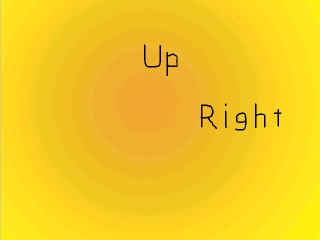
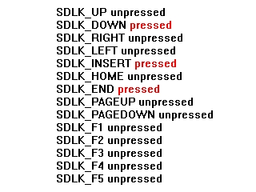

Key States

Last Updated 2/23/14
Here you're going to check if a key is pressed without even using events. This is possible due to keystates. Sometimes just checking if a key is up or down is easier than monitoring events.This tutorial will teach you to check if the key is pressed, rather than monitoring key events.
A Key states tutorial with SDL 2 is now available.
//While the user hasn't quit
while( quit == false )
{
//While there's events to handle
while( SDL_PollEvent( &event ) )
{
//If the user has Xed out the window
if( event.type == SDL_QUIT )
{
//Quit the program
quit = true;
}
}
As you can see, despite the fact that we're showing the messages based on key presses we don't check for any key events.
//Get the keystates
Uint8 *keystates = SDL_GetKeyState( NULL );
Instead what we do is use SDL_GetKeyState().
What SDL_GetKeyState() does is give us the key state array. The key state array is a list of every key and whether the key is pressed or not, kind of like this:
Now we can tell which key is down.
Just for information's sake, the argument we give SDL_GetKeyState() gets the number of keys available. Since we don't care about how many keys there are, we just set it to NULL.
What SDL_GetKeyState() does is give us the key state array. The key state array is a list of every key and whether the key is pressed or not, kind of like this:

Now we can tell which key is down.
Just for information's sake, the argument we give SDL_GetKeyState() gets the number of keys available. Since we don't care about how many keys there are, we just set it to NULL.
//If up is pressed
if( keystates[ SDLK_UP ] )
{
apply_surface( ( SCREEN_WIDTH - up->w ) / 2, ( SCREEN_HEIGHT / 2 - up->h ) / 2, up, screen );
}
//If down is pressed
if( keystates[ SDLK_DOWN ] )
{
apply_surface( ( SCREEN_WIDTH - down->w ) / 2, ( SCREEN_HEIGHT / 2 - down->h ) / 2 + ( SCREEN_HEIGHT / 2 ), down, screen );
}
//If left is pressed
if( keystates[ SDLK_LEFT ] )
{
apply_surface( ( SCREEN_WIDTH / 2 - left->w ) / 2, ( SCREEN_HEIGHT - left->h ) / 2, left, screen );
}
//If right is pressed
if( keystates[ SDLK_RIGHT ] )
{
apply_surface( ( SCREEN_WIDTH / 2 - right->w ) / 2 + ( SCREEN_WIDTH / 2 ), ( SCREEN_HEIGHT - right->h ) / 2, right, screen );
}
//Update the screen
if( SDL_Flip( screen ) == -1 )
{
return 1;
}
Here's a basic if up is pressed show the up message, if down is pressed show the down message, etc.
Had this program been done with events, the code would be a good size longer.
SDL_GetKeyState() and other state functions like SDL_GetModState(), SDL_GetMouseState(), SDL_JoystickGetAxis() and others can be incredibly useful. Learn more about them in the SDL API reference, which you should have handy on your computer.
Had this program been done with events, the code would be a good size longer.
SDL_GetKeyState() and other state functions like SDL_GetModState(), SDL_GetMouseState(), SDL_JoystickGetAxis() and others can be incredibly useful. Learn more about them in the SDL API reference, which you should have handy on your computer.